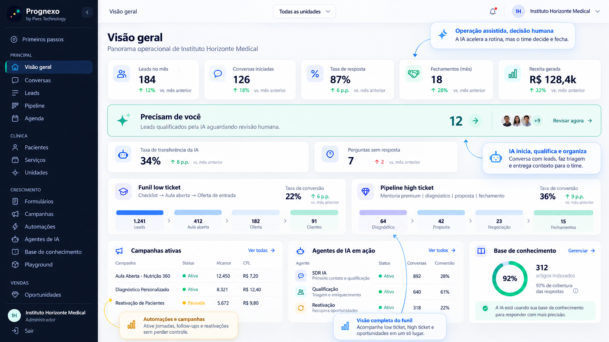

O contato chega. O contexto se perde.
Mensagens, planilhas e anotações separadas dificultam entender quem precisa de atenção.
CRESCIMENTO PARA MÉDICOS E CLÍNICAS
Do primeiro contato ao relacionamento que continua. CRM, WhatsApp e inteligência artificial para uma operação que trabalha junto.
Sua equipe no comando. A tecnologia conectando os pontos.

A OPERAÇÃO NÃO PRECISA SER FRAGMENTADA
Mensagens, planilhas e anotações separadas dificultam entender quem precisa de atenção.
Sem responsáveis e próximos passos definidos, o acompanhamento depende da memória da equipe.
Múltiplas unidades e canais pedem uma visão que conecte pessoas, processos e resultados.
POR DENTRO DO PROGNEXO
Explore exemplos da experiência Full.
Dados fictícios, possibilidades reais de organização.
A VISÃO FULL
Uma estrutura modular para acompanhar
a maturidade da sua operação.
Leads, funis personalizados, distribuição, tarefas e histórico. Cada oportunidade com um responsável e um próximo passo.
Inbox compartilhado, campanhas, templates, transferência entre atendentes e acompanhamento do contato.
SDR e BDR, qualificação, resumos, priorização e base de conhecimento. Handoff para o time humano quando necessário.
Captação, follow-up, lembretes e reativação organizados por regras, etapas e eventos. Sua equipe acompanha as execuções.
Permissões, distribuição de contatos, agendas, organização por unidade e indicadores para acompanhar a execução.
Produtos, vendas, cobrança, integrações de pagamento e visão financeira da operação.
Módulo previsto no FullGestão clínica e conexão da jornada de atendimento à operação. Escopo e integração definidos por módulo.
Módulo previsto · sujeito à validaçãoDashboards, relatórios, metas, fontes de captação, conversão e desempenho da equipe e das unidades.
INTELIGÊNCIA A SERVIÇO DA SUA EQUIPE
A IA ajuda a organizar o trabalho comercial. Sua equipe define as regras, revisa as respostas e conduz as relações.
Conhecimento da sua operaçãoRespostas orientadas pela base e pelos critérios definidos pela clínica.
Continuidade com contextoQualificação, resumo e prioridades para o time assumir a conversa.
Controle em cada etapaLimites de uso, auditoria e transferência para atendimento humano.
Interesse em conhecer o atendimento da clínica.
Entender o interesse e organizar as informações comerciais.
Resumo, responsável e próximo passo definidos.
CONEXÕES QUE FAZEM SENTIDO
Integrações previstas na visão Full, com disponibilidade confirmada por plano e implantação.
INVESTIMENTO EM CONTINUIDADE
Proposta comercial para o Full.
Contratação condicionada à liberação dos módulos.
Uma base sólida para uma clínica com operação enxuta.
Mensalidade proposta
Inteligência e automação para uma equipe em expansão.
Mensalidade proposta
Mais unidades e volume, com uma visão integrada.
Mensalidade proposta
Transparência no investimento. Tarifas Meta/WhatsApp, mídia, taxas de pagamento e serviços externos não estão incluídos. Uso de IA tem franquia e não é ilimitado.
Condição proposta de lançamento: Performance a R$1.997/mês durante 12 meses; depois, R$2.497/mês. Sem acumular descontos. Implantação cobrada separadamente. Não há cobrança neste site.
| Recurso / limite | Essencial | Performance | Scale |
|---|---|---|---|
| Unidades / usuários | 1 / 3 | 2 / 8 | 5 / 20 |
| Contatos armazenados | 5.000 | 20.000 | 50.000 |
| Armazenamento de anexos | 5 GB | 20 GB | 50 GB |
| CRM e WhatsApp | Incluídos | Incluídos | Incluídos |
| IA comercial | Copiloto | SDR / BDR + copiloto | SDR / BDR + copiloto |
| Ações de IA / mês | 500 | 2.000 | 5.000 |
| Produtos e pagamentos | Adicional | Previsto na liberação | Previsto na liberação |
| Gestão clínica | Sob proposta | Sob proposta | Sob escopo e liberação |
| Suporte assistido / mês | 1h | 2h | 4h |
Todos os limites são propostas de composição. 1 ação de IA = uma geração com até 4.000 tokens de entrada e 500 de saída; entradas maiores consomem múltiplas ações proporcionais, arredondadas para cima. Ações não acumulam. Pacote adicional proposto: 1.000 ações por R$397, somente após autorização.
Redes, alto volume e requisitos específicos recebem uma proposta de implantação e consumo.
DECISÃO COM CONTEXTO
Simule usando a margem de contribuição de cada venda ou atendimento adicional. Receita bruta não é lucro.
Uma referência matemática. A plataforma não garante vendas ou retorno.
Incluindo implantação diluída em 12 meses: 6 vendas/mês. Custos externos devem ser somados à sua análise.
ANTES DO PRÓXIMO PASSO
Esta página apresenta a visão completa do Prognexo Full. A versão atual e o desenvolvimento dos módulos seguem etapas distintas. Recursos clínicos, financeiros e integrações devem ter sua disponibilidade confirmada antes de contratação.
A IA apoia tarefas comerciais, qualificação e organização de informações. O atendimento humano continua disponível e a decisão clínica pertence ao médico. Fechamento por closer humano não está incluído na mensalidade.
Proposta para o Performance: diagnóstico comercial, configuração de até dois funis, conexão dos canais previstos, importação de uma base tratada, configuração inicial da base de conhecimento e um treinamento da equipe. Migrações complexas, limpeza de dados e integrações personalizadas são orçadas à parte.
Tarifas do WhatsApp são externas e variam por categoria de mensagem e mercado. IA possui franquia mensal. Excedentes dependem de aprovação de pacote adicional; sem autorização, o uso de IA é pausado ao atingir o limite.
A visão Full também contempla produtos, funis e integrações de pagamento para educação médica. A composição é ajustada na implantação conforme os módulos liberados e o seu modelo de negócio.
A proposta contempla separação por organização, permissões, auditoria e controle de acesso. Escopo de tratamento, retenção, responsabilidades e requisitos de privacidade devem constar no contrato. Não envie dados de pacientes por este site comercial.
SEU PRÓXIMO CAPÍTULO
Conte sobre sua operação e converse com nossa equipe para conhecer o Prognexo.